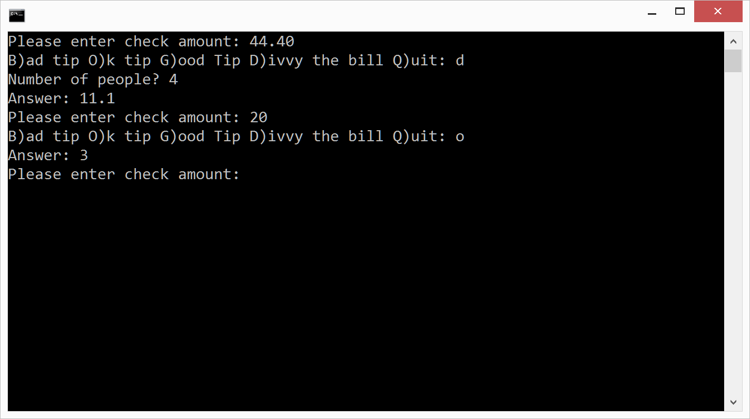

Duration
30 minutes
Homework goals
Here you will write a program to help restaurant diners calculate the tip and split the bill evenly among the group members. The main goal is to write a class with a field and some methods. A secondary goal is to practice with input/output, variables, and control flow. Sample output from the completed application is shown below.
Required assets
The provided Homework Resources/Completed folder contains a completed version of the program you can use to check your work. Please make sure you have this folder before you begin.
Steps
Below are the high-level instructions to implement the program.
Tip Calculation
- Create a new Console Project in Visual Studio. Name the Project and Solution TipCalculation.
-
Create a new class named
Tipper. Be sure to put it in its own file in your project. -
Add a
publicfield of typedoubleinside theTipperclass to store the total amount of the restaurant bill. -
Implement two
publicmethods inside theTipperclass to calculate the tip:-
CalculateTip: takes onedoubleparameter which represents the desired tip percentage, computes the tip, and returns the tip amount. -
CalculateTip: takes no parameters, computes a 15% tip, and returns the tip amount. Note that this is method overloading since the twoCalculateTipmethods have the same name. This is legal in C# since the parameter lists are different (i.e. one of the methods takes 1 parameter and the other takes 0 parameters).
-
-
Implement one
publicmethod inside theTipperclass to split the bill based on the number of diners. Name the methodDivvy. It must take anintparameter which specifies the number of diners, calculate the amount each should pay if the bill is split evenly, and return that amount. -
Open Program.cs. You will be adding code to
Mainto allow the user to calculate tips and divvy restaurant bills. -
Create an instance of the
Tipperclass. -
Add a loop so the remaining steps can be done repeatedly until the user quits the program.
There are two common ways to write a "forever" loop (see below), please use whichever you
prefer. Use a
breakinside the loop to exit the loop when the user asks to quit the program.for (;;) { } while (true) { }The remaining steps will go inside the loop. -
Read the amount of a restaurant bill from the user and load it into the field of the
Tipperobject. -
Ask the user which operation they would like to perform (bad tip, OK tip, good tip, or divvy bill).
Read the user response and obtain a single character to represent the operation. This code is fairly
tricky so it is given below; you can use this code exactly as-is in your program.
Console.Write("B)ad tip O)k tip G)ood Tip D)ivvy the bill Q)uit: "); char operation = Console.ReadLine().ToUpper()[0]; -
Perform the calculation the user requested based on the operation they entered. Here are a few
notes to help you:
- If the user enters 'B', 'O', or 'G', calculate and output a tip of 10%, 15%, or 20% respectively.
- If the user enters 'D', you will need to read the number of diners from the user and then calculate and output the per-diner amount.
- If the user enters 'Q', you should exit the loop (which will then exit the program).
- Build and run the program to test your work.
Summary
This program let you practice with classes and methods. In particular, you saw a class used in its role as "container for related fields and methods". Grouping these together helps you organize your code in a logical way which should make it easier to work on the code in the future. For example, if you need to modify or extend the tip-calculation code you will know right where to find since all the tip-related code is inside theTipper class.